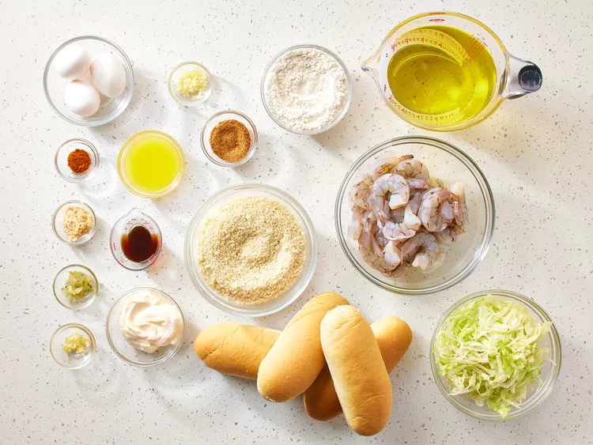
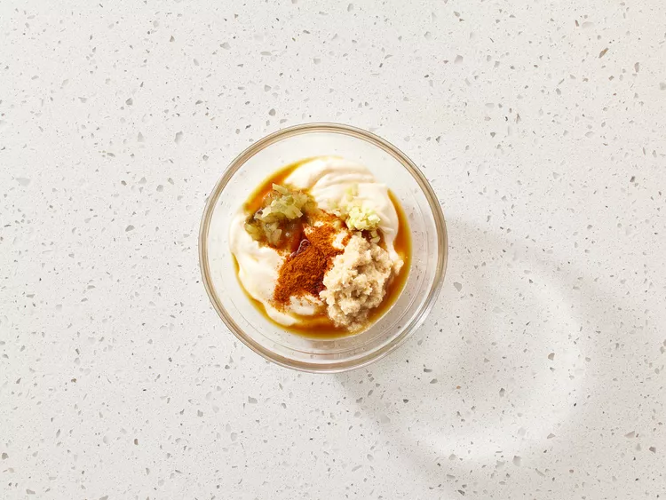
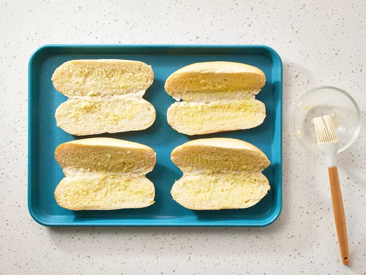
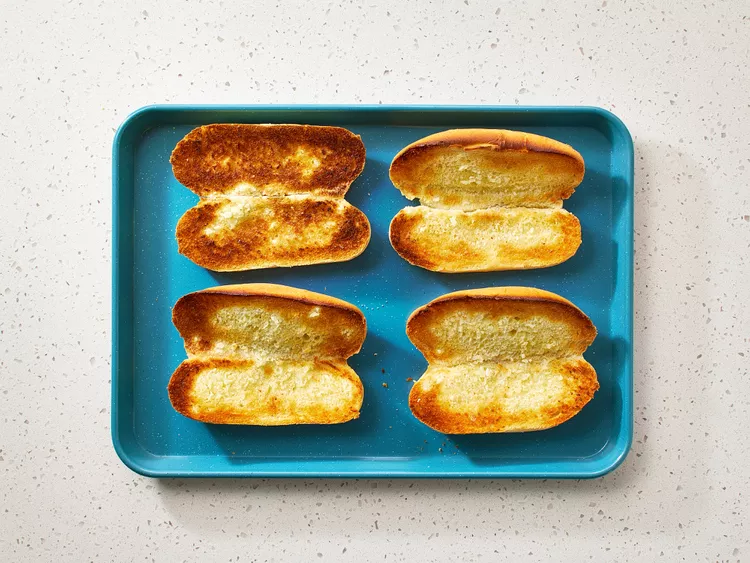
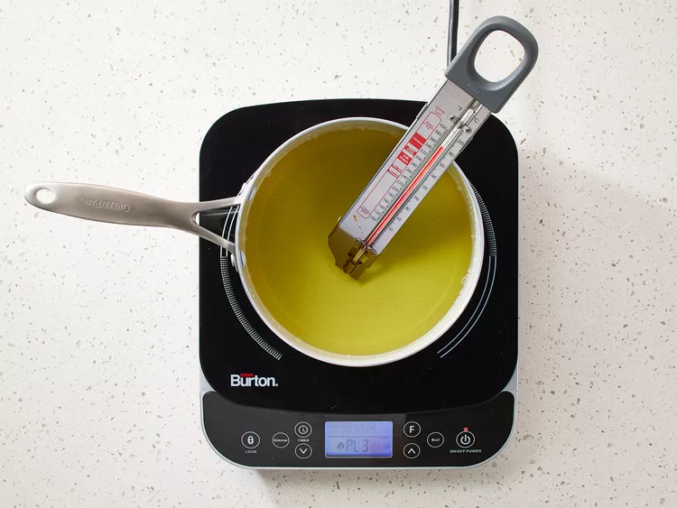
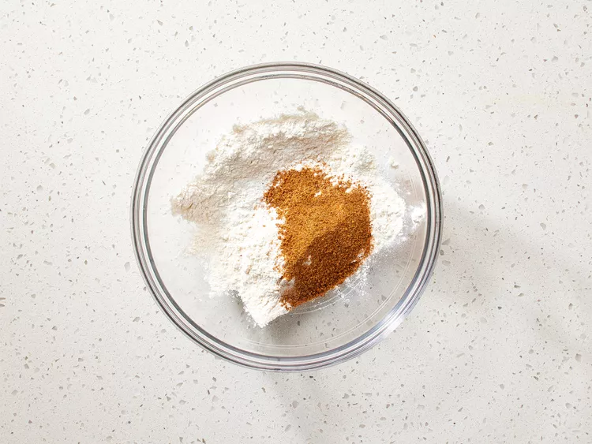
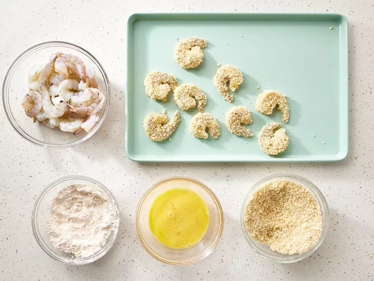
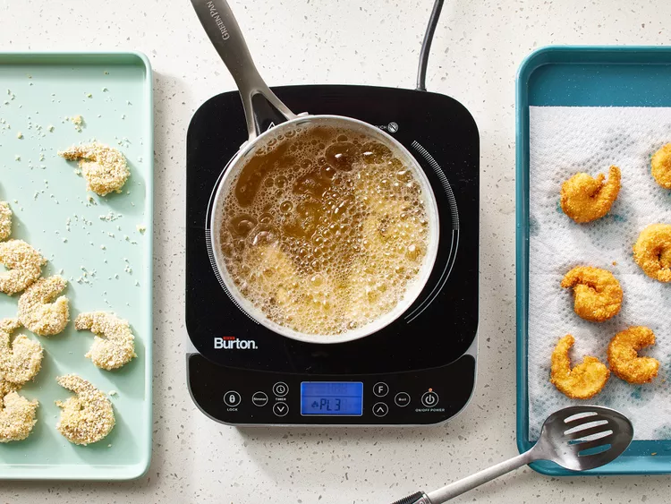
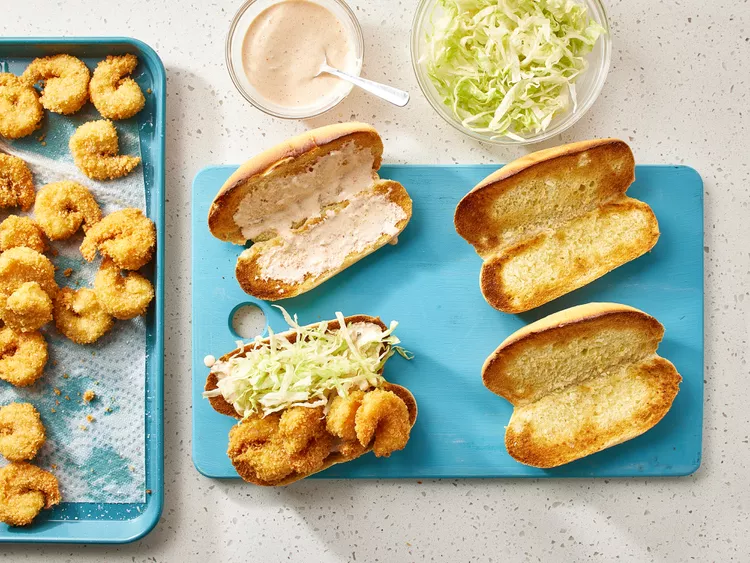

A sandwich, to many people is just a sandwich, but a shrimp Po Boy is sunshine through a cloudy day. Nothing shines brighter than a smile through thick french bread, with thinly sliced tomatoes, and crispy fried shrimp in each bite. With a shower of lettuce and a remoulade you'll be glad you made, this world beater of a sandwich.
Gather all ingredients.
Preheat the oven to 350 degrees F (175 degrees C).
Make the rémoulade: Mix mayonnaise, ponzu, horseradish, relish, garlic, and cayenne together in a bowl. Set aside.
Make the sandwiches: Mix melted butter and garlic together in a small bowl. Place rolls, split-sides up, onto a baking sheet. Brush the insides with garlic butter.
Cook in the preheated oven until toasted, 1 to 3 minutes. Remove from the oven and set aside.
Heat oil in a deep fryer or large saucepan to 360 degrees F (182 degrees C).
Mix flour and Creole seasoning together in a bowl. Place beaten eggs into a second bowl and panko into a third bowl.
Dredge shrimp in flour mixture; shake off excess. Dip into beaten egg. Lift up so excess egg drips back in the bowl. Press into bread crumbs to coat both sides. Place breaded shrimp, unstacked, onto a plate.
Fry shrimp in batches in the preheated oil until breading is golden brown and meat is opaque, about 2 minutes per side.
Spread rémoulade onto rolls. Top with hot shrimp, then shredded lettuce.
